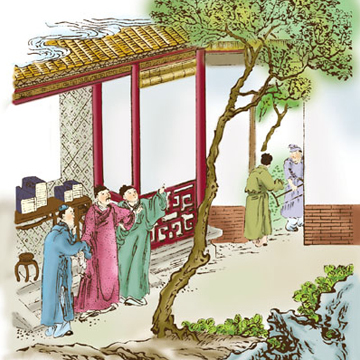

田真叹荆

隋朝时候，有一家人家姓田的，他家里同胞弟兄们，一共有三个，大的名叫田真，第二个名叫田庆，小的名叫田广。弟兄们三个人，要想分家了，家里的钱财产业，都已经议定平均分派。 但是堂前素来有一棵紫荆花树，长得来非常的茂盛，因此议定把这棵紫荆花树，也匀均分做三份。哪里晓得这棵紫荆树，还没有等他们来分，就顷刻枯死了。 大哥田真见了，叹口气说道，树木呢，原来是同株连根的，一知道将要分砍了，所以顷刻憔悴。照这样看起来，那末我们的人，还及不来这株树木呢。因此悲伤得了不得。兄弟们仍旧同住不分，大家更加友爱了，那棵紫荆树竟依旧照从前一样的荣茂起来。